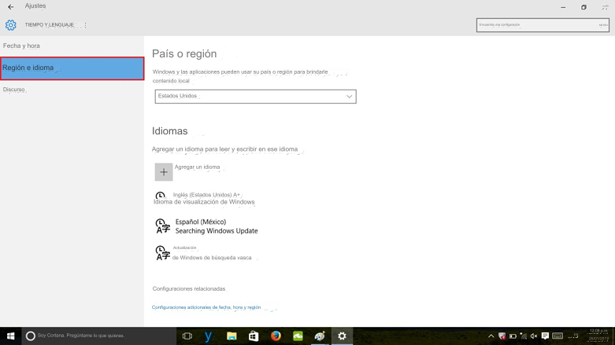

Pasos para configurar el idioma y la región de su sistema operativo Windows.
paso 1: Haga clic en el menú Inicio y elija Configuración.

paso 2: Selecciona hora e idioma
paso 3: Seleccione la región y el idioma y haga clic en Agregar un idioma

paso 4: Busque y haga clic en el idioma que desea utilizar
paso 5: Haga clic en el idioma y seleccione Opciones. Haga clic en Descargar para instalar el paquete de idioma y teclado
paso 6: Una vez que el paquete es descargado , haga clic en el idioma y seleccione Establecer como predeterminado
paso 7: Escriba Panel de control en la barra de tareas cuadro de búsqueda y seleccione Panel de control en la búsqueda resultados
paso 8: Haga clic en Región
paso 9: Seleccione el administrativo Pestaña
paso 10: Haga clic en el botón Copiar configuración
paso 11: Elija dónde desea copiar la configuración y haga clic en Aceptar. El cambio de idioma será salvo cuando reinicias su computadora